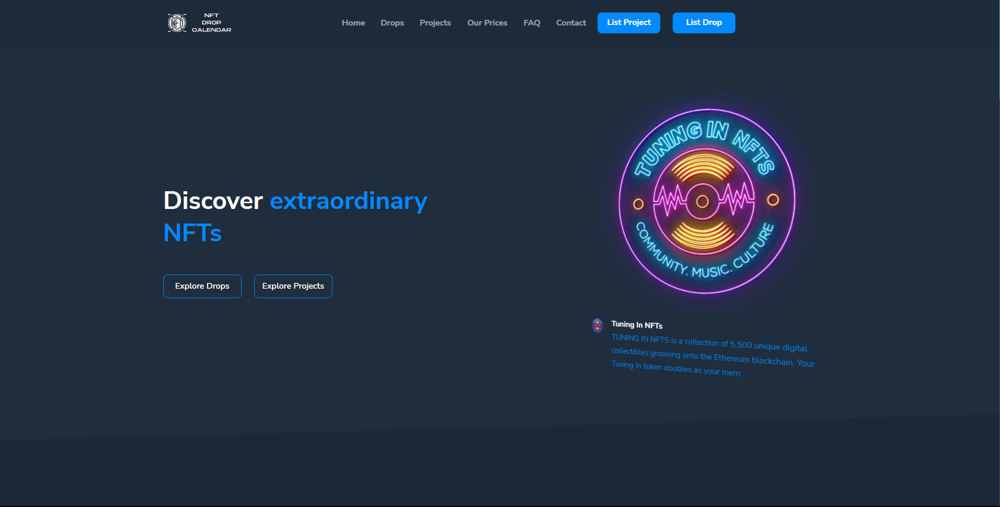
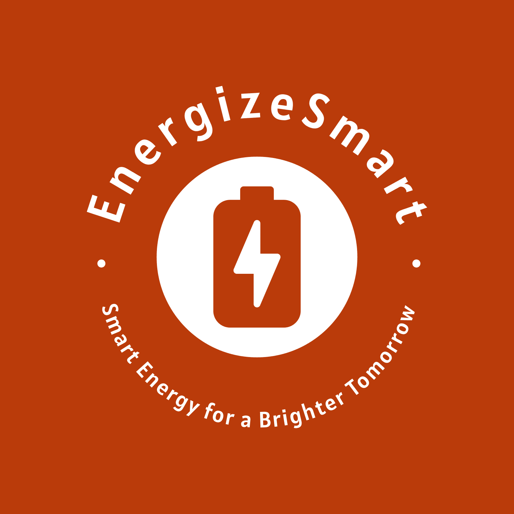

Software developer based in the Netherlands
Jelmer Ketelaar
I build practical websites and applications with clean interfaces, reliable backend logic, and maintainable code.
- 2022 Software development graduate
- PHP Python, JavaScript, and SQL
- NL Based in the Netherlands
About
A developer who builds practical products end to end.
Hi, I'm Jelmer.
I'm Jelmer Ketelaar, a 25-year-old developer from the Netherlands. I graduated in 2022 from ROC Da Vinci College with a degree in software development.
I work across PHP and Laravel, JavaScript and TypeScript, Python automation, and relational databases. I like building the full flow: clear interfaces, dependable backend logic, useful data models, and deployment details that do not get in the way.
Recent work includes an event photo album MVP with guest uploads and QR joins, a rental listing scraper with notifications, and Laravel migrations for older PHP projects. I care about simple solutions, readable code, and shipping improvements that are easy to maintain.
Services
Focused support for practical web projects.
Website Development
Responsive websites with clear structure, accessible markup, and polished user interfaces.
Application Development
Feature work for web applications using practical backend logic and maintainable code patterns.
Maintenance
Targeted improvements, bug fixes, and cleanup that make existing projects easier to use and extend.
Skills
Core technologies I use to build and improve projects.
Balanced across frontend, backend, and data.
My strongest work combines simple user flows with dependable implementation details, so the result feels clear for users and manageable for the people maintaining it.
Frontend
- HTMLExperienced
- CSSIntermediate
- JavaScriptIntermediate
Backend
- PHPExperienced
- PythonIntermediate
- MySQLIntermediate
Projects
Selected work and experiments.
Event photo MVP
EventFrame MVP
Full-stack event photo albums with QR guest joins, uploads, live updates, and organizer controls.
View repositoryRental automation
HuurhuisScraper
Scrapes rental listings into MySQL and sends WhatsApp alerts when listings match the filters.
View repository
Laravel migration
NFT Drop Calendar
Compatibility-first Laravel conversion that keeps legacy URLs working during migration.
View repository
Energy platform
EnergizeSmart
Laravel energy management system for monitoring, analyzing, and optimizing consumption.
View repository
Contact
Have a project or improvement in mind?
Let's talk about what needs to be built.
Send me an email or connect through GitHub and LinkedIn. I am interested in practical web work, focused improvements, and projects that need clear implementation.